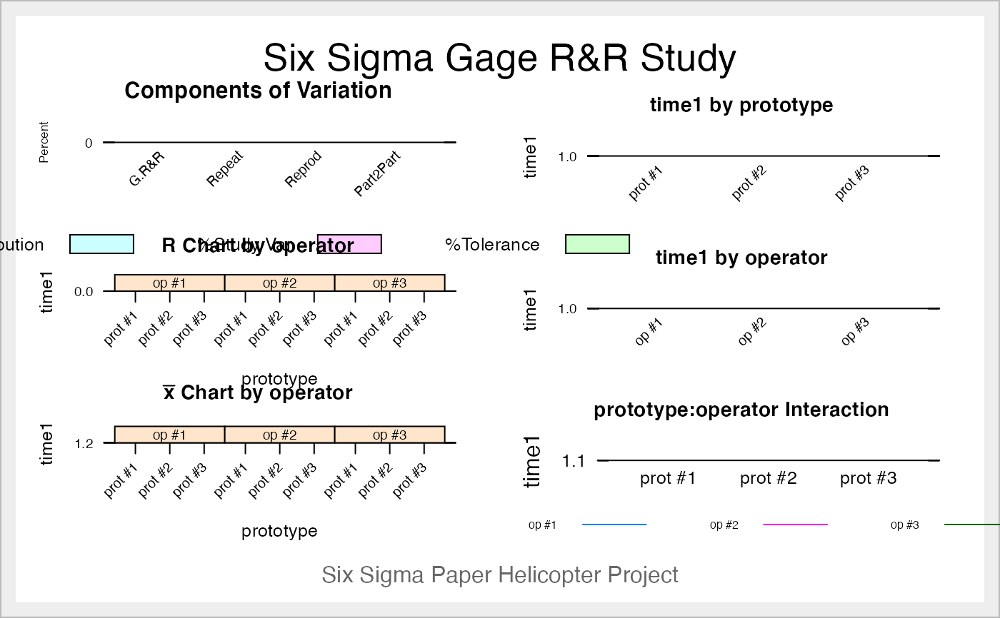

ss.rr.RdPerforms Gage R&R analysis for the assessment of the measurement system of a process. Related to the Measure phase of the DMAIC strategy of Six Sigma.
ss.rr( var, part, appr, lsl = NA, usl = NA, sigma = 6, tolerance = usl - lsl, data, main = "Six Sigma Gage R&R Study", sub = "", alphaLim = 0.05, errorTerm = "interaction", digits = 4, method = "crossed", print_plot = TRUE, signifstars = FALSE )
| var | Measured variable |
|---|---|
| part | Factor for parts |
| appr | Factor for appraisers (operators, machines, ...) |
| lsl | Numeric value of lower specification limit used with USL to calculate Study Variation as %Tolerance |
| usl | Numeric value of upper specification limit used with LSL to calculate Study Variation as %Tolerance |
| sigma | Numeric value for number of std deviations to use in calculating Study Variation |
| tolerance | Numeric value for the tolerance |
| data | Data frame containing the variables |
| main | Main title for the graphic output |
| sub | Subtitle for the graphic output (recommended the name of the project) |
| alphaLim | Limit to take into account interaction |
| errorTerm | Which term of the model should be used as error term (for the model with interation) |
| digits | Number of decimal digits for output |
| method | Character to specify the type of analysis to perform, |
| print_plot | if TRUE (default) the plots are printed. Change to FALSE to avoid printing plots. |
| signifstars | if FALSE (default) the significance stars are ommitted. Change to TRUE to allow printing stars. |
Analysis of Variance Table/s. Variance composition and %Study Var. Graphics.
The ANOVA table of the model
The ANOVA table of the reduced model (without interaction, only if interaction not significant)
A matrix with the contribution of each component to the total variation
A matrix with the contribution to the study variation
Number of distinct categories
Performs an R&R study for the measured variable, taking into account part and appraiser factors. It outputs the sources of Variability, and six graphs: bar chart with the sources of Variability, plots by appraiser, part and interaction and x-bar and R control charts.
The F test for the main effects in the ANOVA table is usually made
taken the operator/appraisal
interaction as the error term (repeated measures model), thereby computing F as
$MS_factor/MS_interaction$, e.g. in appendix A of AIAG MSA manual,
in Montgomery (2009) and by statistical software such as Minitab.
However, in the example provided in page 127 of the AIAG MSA Manual, the
F test is performed as $MS_factor/MS_equipment$, i.e., repeatability.
Thus, since version 0.9-3 of the SixSigma package, a new argument
errorTerm controls which term should be used as error Term, one of
"interaction", "repeatability".
Argument alphaLim is used as upper limit to use the full model, i.e.,
with interaction. Above this value for the interaction effect, the
ANOVA table without the interaction effect is also obtained, and the variance
components are computed pooling the interaction term with the repeatibility.
Tolerance can be calculaten from usl and lsl values or specified by hand.
The type of analysis to perform can be specified with the parameter method, "crossed" or "nested".
Be sure to select the correct one and to have the data prepare for such type of analysis.
If you don't know wich one is for you check it before. It is really important to perform the correct one.
Otherwise results have no sense.
Automotive Industry Action Group. (2010). Measurement Systems Analysis (Fourth Edition). AIAG.
Cano, Emilio L., Moguerza, Javier M. and Redchuk, Andres. 2012. Six Sigma with R. Statistical Engineering for Process Improvement, Use R!, vol. 36. Springer, New York. https://www.springer.com/gp/book/9781461436515.
Montgomery, D. C. (2009). Introduction to Statistical Quality Control (Sixth Edition ed.). New York: Wiley & Sons, Inc.
EL Cano with contributions by Kevin C Limburg
ss.rr(time1, prototype, operator, data = ss.data.rr, sub = "Six Sigma Paper Helicopter Project", alphaLim = 0.05, errorTerm = "interaction", lsl = 0.7, usl = 1.8, method = "crossed")#> Complete model (with interaction): #> #> Df Sum Sq Mean Sq F value Pr(>F) #> prototype 2 1.2007 0.6004 28.797 0.00422 #> operator 2 0.0529 0.0265 1.270 0.37415 #> prototype:operator 4 0.0834 0.0208 0.974 0.44619 #> Repeatability 18 0.3854 0.0214 #> Total 26 1.7225 #> #> alpha for removing interaction: 0.05 #> #> #> Reduced model (without interaction): #> #> Df Sum Sq Mean Sq F value Pr(>F) #> prototype 2 1.2007 0.6004 28.174 8.56e-07 #> operator 2 0.0529 0.0265 1.242 0.308 #> Repeatability 22 0.4688 0.0213 #> Total 26 1.7225 #> #> Gage R&R #> #> VarComp %Contrib #> Total Gage R&R 0.0218822671 25.38 #> Repeatability 0.0213087542 24.71 #> Reproducibility 0.0005735129 0.67 #> operator 0.0005735129 0.67 #> Part-To-Part 0.0643389450 74.62 #> Total Variation 0.0862212121 100.00 #> #> VarComp StdDev StudyVar %StudyVar %Tolerance #> Total Gage R&R 0.0218822671 0.14792656 0.8875594 50.38 80.69 #> Repeatability 0.0213087542 0.14597518 0.8758511 49.71 79.62 #> Reproducibility 0.0005735129 0.02394813 0.1436888 8.16 13.06 #> operator 0.0005735129 0.02394813 0.1436888 8.16 13.06 #> Part-To-Part 0.0643389450 0.25365123 1.5219074 86.38 138.36 #> Total Variation 0.0862212121 0.29363449 1.7618069 100.00 160.16 #> #> Number of Distinct Categories = 2